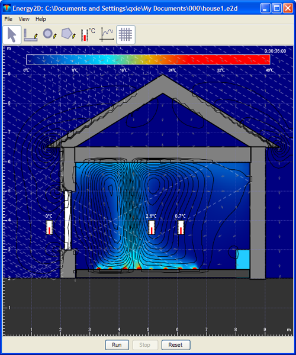

User Manual
How to use Energy2D
|
Energy2D is:
|

Javascript controls
Energy2D scripts:
- View options
set clock true/false: Show or hide the digital clockset graph true/false: Show or hide the graphset grid true/false: Show or hide the grid linesset heat_flux_arrow true/false: Show or hide the heat flux arrowsset heat_flux_line true/false: Show or hide the heat flux linesset isotherm true/false: Show or hide the isotherm linesset rainbow true/false: Show or hide the rainbowset ruler true/false: Show or hide the rulersset seethrough true/false: Set coloring through the partsset streamline true/false: Show or hide the streamlinesset velocity true/false: Show or hide the velocity vectors